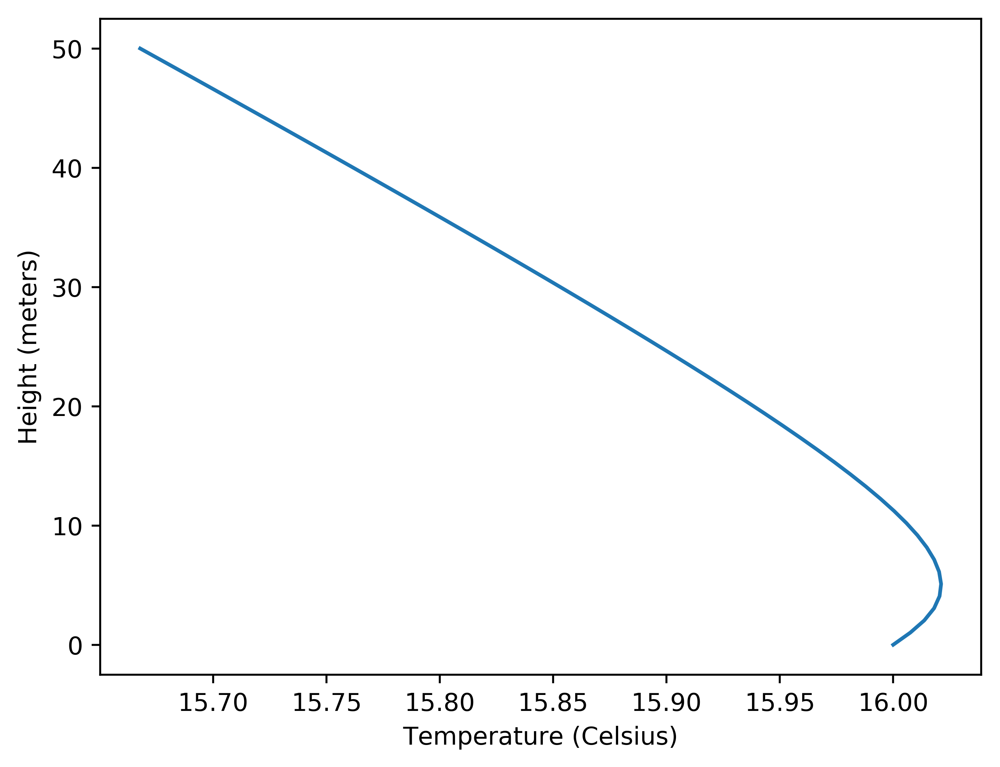
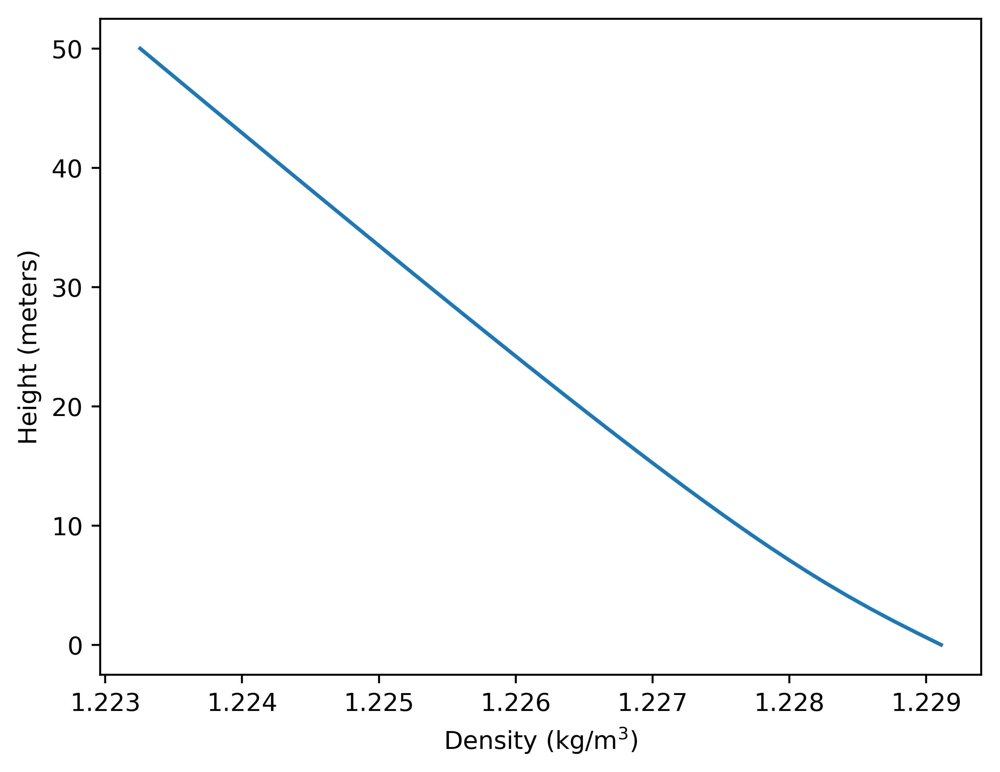

Black Pool Ferris wheel from Barrow in Furness¶
back to Examples
In this example we try to model an observation done by Ranty Flat Earth
1 2 3 4 5 6 7 8 9 10 11 12 13 14 15 16 17 18 19 20 21 22 23 24 25 26 27 28 29 30 31 32 33 34 35 36 37 38 39 40 41 42 43 44 45 46 47 48 49 50 51 | from refraction_render.renderers import Scene,Renderer_35mm
from refraction_render.calcs import CurveCalc,FlatCalc
from refraction_render.misc import mi_to_m,ft_to_m
from pyproj import Geod
import numpy as np
import matplotlib.pyplot as plt
import os
def smooth_f(x,a=1):
return np.abs((x+a*np.logaddexp(x/a,-x/a))/2.0)
def T_prof(h):
e=np.nan_to_num(np.exp(-smooth_f(h/4)**0.5))
return -0.3*e
# Temperature data at time of observation
calc = CurveCalc(T0=16,P0=102000,T_prof=T_prof)
#plotting temperature profile
h = np.linspace(0,50)
plt.plot(calc.atm_model.T(h),h)
plt.xlabel("Temperature (Celsius)")
plt.ylabel("Height (meters)")
plt.savefig("T_prof.png",bbox_inches="tight",dpi=500)
plt.clf()
plt.plot(calc.atm_model.rho(h),h)
plt.xlabel("Density (kg/m$^3$)")
plt.ylabel("Height (meters)")
plt.savefig("rho_prof.png",bbox_inches="tight",dpi=500)
plt.clf()
h_obs, lat_obs, lon_obs = ft_to_m(10) ,54.045708, -3.201814
lat_fw, lon_fw = 53.810927, -3.057650
bg_color = np.array([0,0,0],dtype=np.uint8)
sf_color = np.array([20, 5, 55],dtype=np.uint8)
renderer = Renderer_35mm(calc,h_obs,lat_obs,lon_obs,(lat_fw,lon_fw),
mi_to_m(30),vert_res=1080,focal_length=2000)
s = Scene()
s.add_image("ferriswheel_lights.png",(ft_to_m(33),lat_fw,lon_fw),dimensions=(-1,ft_to_m(108)))
renderer.render_scene(s,"ferris_wheel.png".format(h_obs),
background_color=bg_color,surface_color=sf_color)
|
Just like in the example: Laser Tests Over Cool Lake, The model for the atmosphere uses this temperature profile which has cool air near the water’s surface. This is because when there is no direct sun on the surface of the water, the air temperature near the surface is primarily driven by the temperature of the water. If the water temperature is lower than the air temperature the air near the surface will be cooler than the air above. For this model we use the following temperature profile:
{kind=link}
That can be used to calculate the air density as a function of height
{kind=link}
This model leads to the following result for a render of the Ferris wheel:
{kind=link}
Compare this to a still image grabbed from the video of the observation.
{kind=link}
Notice there that there is a bit of compression in the image. This is because the temperature gradient at the low level for the atmosphere. The conclusion from this simulation is that the conditions for Ranty’s observations are not impossible on a globe and therefore the observation is not impossible on the globe.
back to Examples